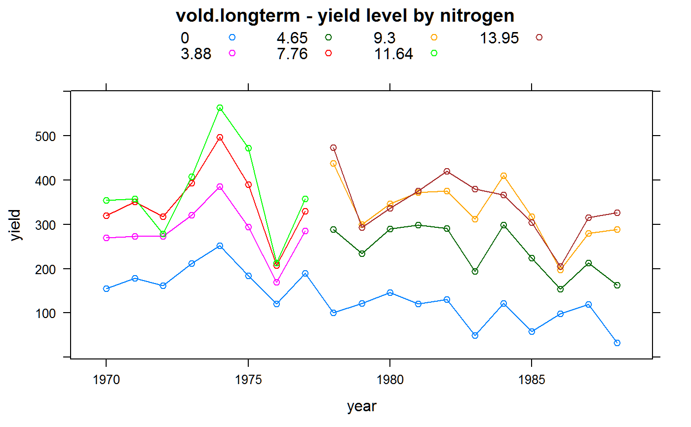
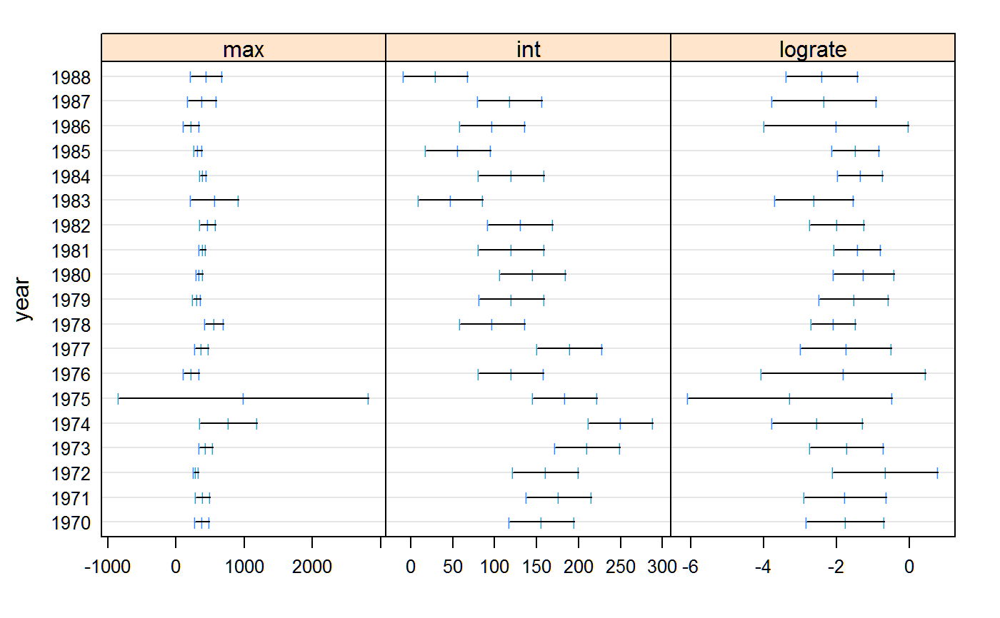
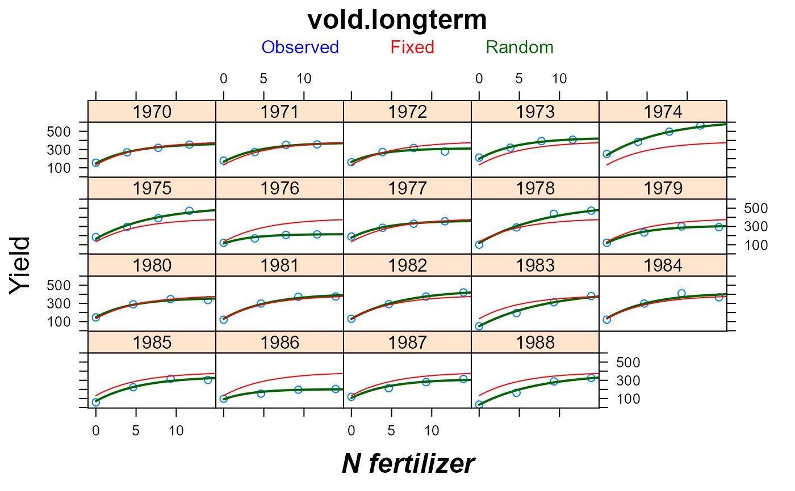

vold.longterm.RdLong-term barley yields at different fertilizer levels
data("vold.longterm")
A data frame with 76 observations on the following 3 variables.
yearyear
nitronitrogen fertilizer, grams/m^2
yieldyield, grams/m^2
Trials conducted at Osaker, Norway. Nitrogen fertilizer amounts were increased by twenty percent in 1978.
Vold (1998) fit a Michaelis-Menten type equation with a different maximum in each year and a decreasing covariate for non-fertilizer nitrogen.
Miguez used a non-linear mixed effects model with asymptotic curve.
Arild Vold (1998). A generalization of ordinary yield response functions. Ecological modelling, 108, 227-236. http://doi.org/10.1016/S0304-3800(98)00031-3
Fernando E. Miguez (2008). Using Non-Linear Mixed Models for Agricultural Data.
# \dontrun{ library(agridat) data(vold.longterm) dat <- vold.longterm libs(lattice) foo1 <- xyplot(yield ~ nitro | factor(year), data = dat, as.table=TRUE, type = "o", main=list("vold.longterm", cex=1.5), xlab = list("N fertilizer",cex=1.5,font=4), ylab = list("Yield", cex=1.5)) # Long term trend shows decreasing yields xyplot(yield ~ year , data = dat, group=nitro, type='o', main="vold.longterm - yield level by nitrogen", auto.key=list(columns=4))if(0){ # Global model m1.nls <- nls(yield ~ SSasymp(nitro, max, int, lograte), data=dat) summary(m1.nls) libs(MASS) # for 'confint' confint(m1.nls) # Raw data plus global model. Year variation not modeled. pdat <- data.frame(nitro=seq(0,14,0.5)) pdat$pred <- predict(m1.nls, newdata=pdat) libs(latticeExtra) # for layers foo1 + xyplot(pred ~ nitro , data = pdat, as.table=TRUE, type='l', col='red', lwd=2) } # Separate fit for each year. Overfitting with 3x19=57 params. libs(nlme)#> #>#> #> #>m2.lis <- nlsList(yield ~ SSasymp(nitro,max,int,lograte) | year, data=dat) plot(intervals(m2.lis),layout = c(3,1)) # lograte might be same for each year# Fixed overall asymptotic model, plus random deviations for each year # Simpler code, but less clear about what model is fit: m3.lme <- nlme(m2.lis) libs(nlme) m3.lme <- nlme(yield ~ SSasymp(nitro, max, int, lograte), data=dat, groups = ~ year, fixed = list(max~1, int~1, lograte~1), random= max + int + lograte ~ 1, start= c(max=300, int=100, rate=-2)) ## # Fixed effects are similar for the nls/lme models ## coef(m1.nls) ## fixef(m3.lme) ## # Random effects are normally distributed ## qqnorm(m3.lme, ~ ranef(.),col="black") ## # Note the trend in intercept effects over time ## plot(ranef(m3.lme),layout=c(3,1)) ## # Correlation between int,lograte int,max may not be needed ## intervals(m3.lme,which="var-cov") ## pairs(m3.lme,pch=19,col="black") ## # Model with int uncorrelated with max,lograte. AIC is worse. ## # fit4.lm3 <- update(m3.lme, random=pdBlocked(list(max+lograte~1,int ~ 1))) ## # intervals(fit4.lm3, which="var-cov") ## # anova(m3.lme, fit4.lm3) # Plot the random-effect model. Excellent fit with few parameters. pdat2 <- expand.grid(year=1970:1988, nitro=seq(0,15,length=50)) pdat2$pred <- predict(m3.lme, new=pdat2) pdat2$predf <- predict(m3.lme, new=pdat2, level=0) foo1 <- update(foo1, type='p', key=simpleKey(c("Observed","Fixed","Random"), col=c("blue","red","darkgreen"), points=FALSE, columns=3)) libs(latticeExtra) foo2 <- xyplot(pred~nitro|year, data=pdat2, type='l', col="darkgreen", lwd=2) foo3 <- xyplot(predf~nitro|year, data=pdat2, type='l', col="red",lwd=1) foo1 + foo2 + foo3## # Income is maximized at about 15 ## pdat2 <- transform(pdat2, income = predf*2 - 7*nitro) ## with(pdat2, xyplot(income~nitro)) # }